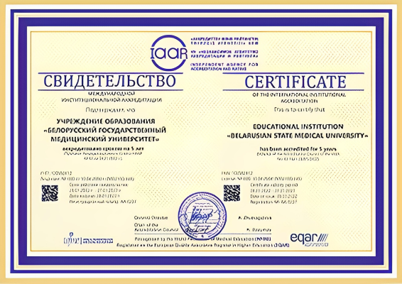

Организация образовательного процесса
Обучение в университете на первой и второй (магистратура) ступенях высшего медицинского образования осуществляется на 73 кафедрах (29 − теоретического профиля, 44 − клинического). Учебные занятия по клиническим и специальным дисциплинам организованы более чем на 70 базах учреждений здравоохранения и научно-практических центров г.Минска.
Образовательные технологии и ресурсы
В университете активно внедряются инновационные образовательные технологии, соответствующие принципам Болонского процесса. Cоздан и широко используется видеоархив уникальных и высокотехнологичных операций. Кафедры оснащены мультимедийными проекторами и телевизорами для демонстрации медиаконтента. В библиотеке организован доступ к полнотекстовым каталогам ведущих журналов по различным направлениям медицины.
Учебно-программная документация
Учебно-программная документация высшего образования I и II ступени: образовательные стандарты, учебные планы университета по специальностям, учебные программы, учебные программы курсов по выбору и факультативных дисциплин и др.
БГМУ получил статус аккредитованного учреждения высшего медицинского образования по стандартам Всемирной федерации медицинского образования
